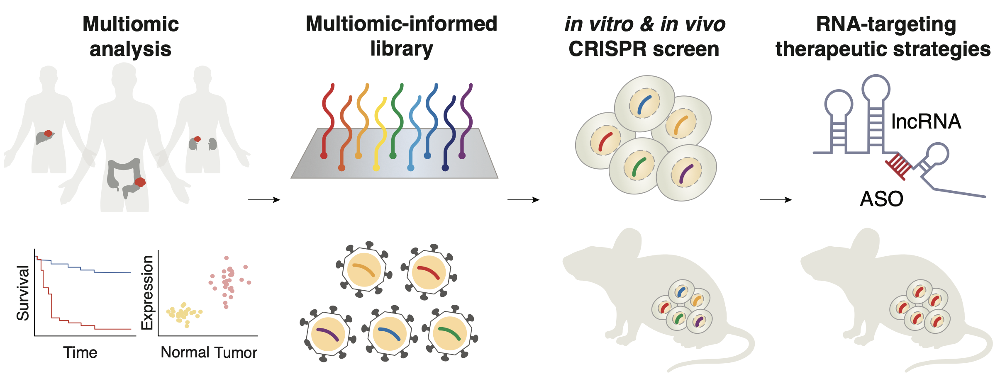
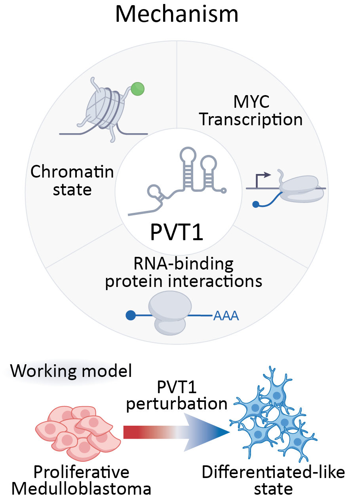
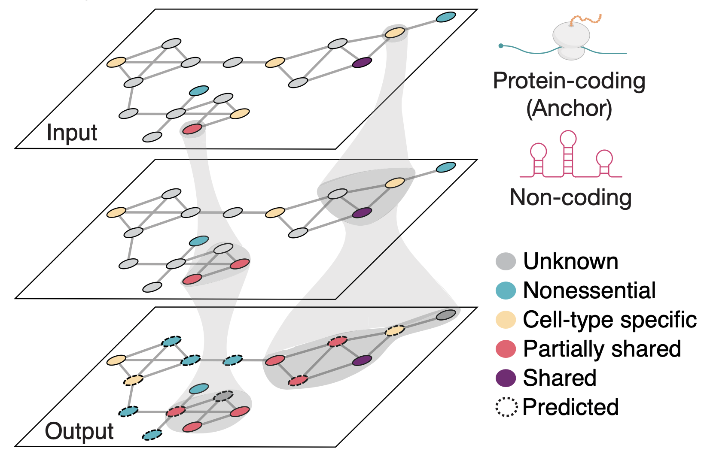
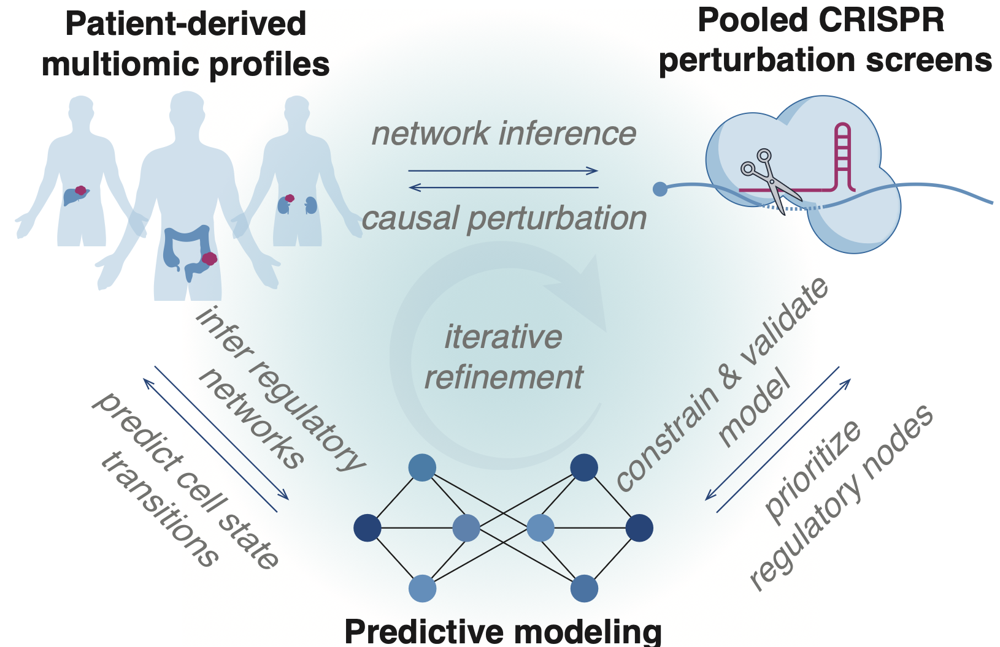

The uncharted landscape of cancer
Cancer is a dynamic and adaptive ecosystem shaped by complex regulatory networks that extend far beyond protein-coding genes. Long noncoding RNAs (lncRNAs) constitute a largely uncharted class of regulators that shape transcriptional and epigenetic states through dynamic context-dependent mechanisms. We aim to build a quantitative and experimentally grounded framework for understanding how lncRNAs shape disease progression and how these principles can be translated into RNA-targeted therapeutic strategies
01 / DISCOVER
Discovering functional regulators of cancer
Which lncRNAs are funcionally important in cancer?
lncRNAs are versatile regulators that influence multiple layers of gene regulation, from chromatin organization and transcription to RNA processing and translation. Despite their diverse regulatory roles, the vast majority of lncRNAs remain uncharacterized, leaving a major gap in our understanding of cancer biology.
We integrate large-scale patient-derived multi-omics with high-throughput CRISPR perturbation screens to systematically identify functional lncRNAs and other regulatory dependencies. By connecting molecular signatures observed in tumors with experimentally measured phenotypes, we aim to uncover previously unrecognized regulators of cancer cell behavior and context-specific vulnerabilities.

02 / UNDERSTAND
Dissecting the mechanisms of RNA regulation
How do noncoding RNAs control gene expression and cancer cell survival?
Unlike protein-coding genes, whose functional domains can often be inferred from sequence, lncRNAs lack well-defined sequence-to-function relationships. Their activities can depend on RNA structure, molecular interactions, subcellular localization, and specific transcript regions, making their mechanisms difficult to predict.
We combine complementary CRISPR-Cas9 and CRISPR-Cas13 perturbation strategies with single-cell transcriptomics and biochemical approaches to map the functional elements and molecular interactions underlying lncRNA activity. By connecting specific RNA regions to regulatory mechanisms and cellular phenotypes, we seek to uncover general principles of RNA-mediated regulation.

03 / PREDICT
Predicting lncRNA regulatory functions and vulnerabilities
Can we predict how lncRNA perturbations reshape cellular behavior? networks?
The functional consequences of lncRNA perturbations can depend on their expression levels, interacting partners, and cellular context. However, the quantitative relationships between lncRNA dosage, regulatory networks, and cellular phenotypes remain poorly understood, limiting our ability to generalize findings beyond individual experiments.
We combine graded and combinatorial CRISPR perturbations with single-cell transcriptomics and machine learning to characterize dosage sensitivity and genetic interactions. By integrating these experimental measurements with cancer multi-omics data, we aim to build predictive models of lncRNA regulatory networks that generate testable hypotheses about cellular responses, regulatory dependencies, and synthetic vulnerabilities.

HOW WE WORK
An Integrated Experimental and Computational Approach
Our research connects large-scale data analysis with direct experimental interrogation of gene function. Rather than treating computational and experimental approaches as separate disciplines, we use them to continuously inform and refine one another.
